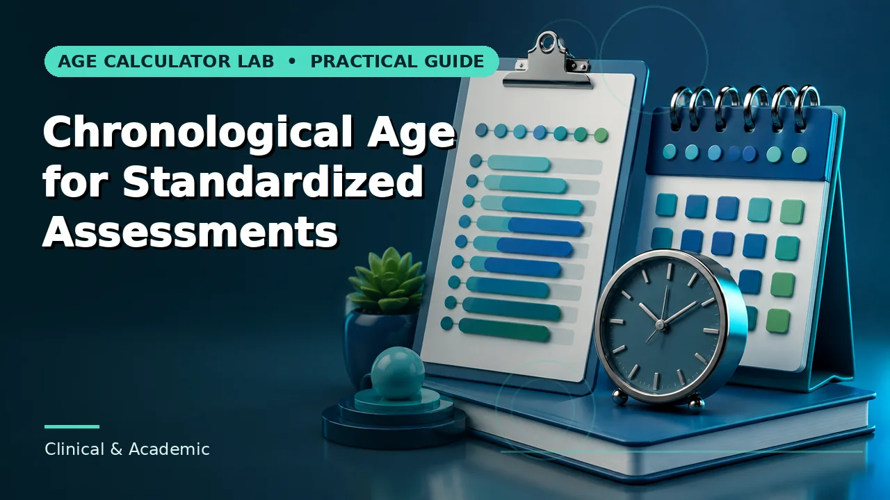
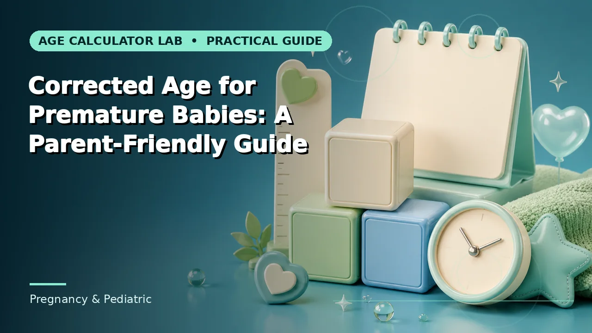
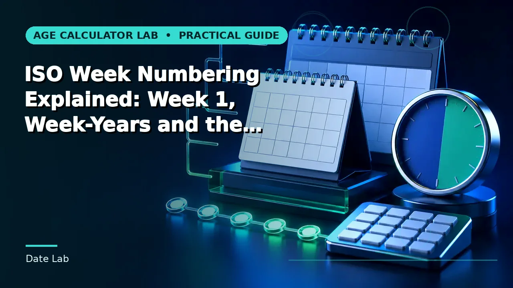
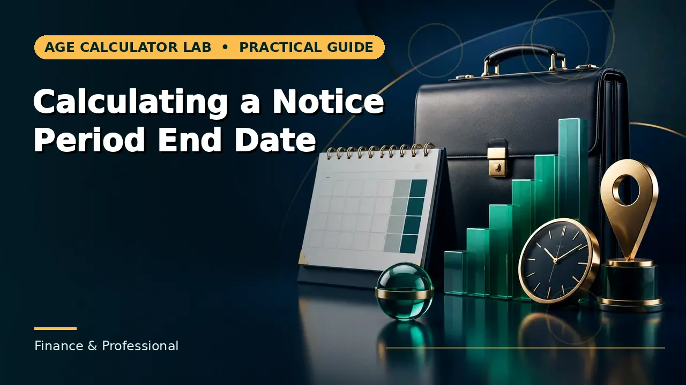
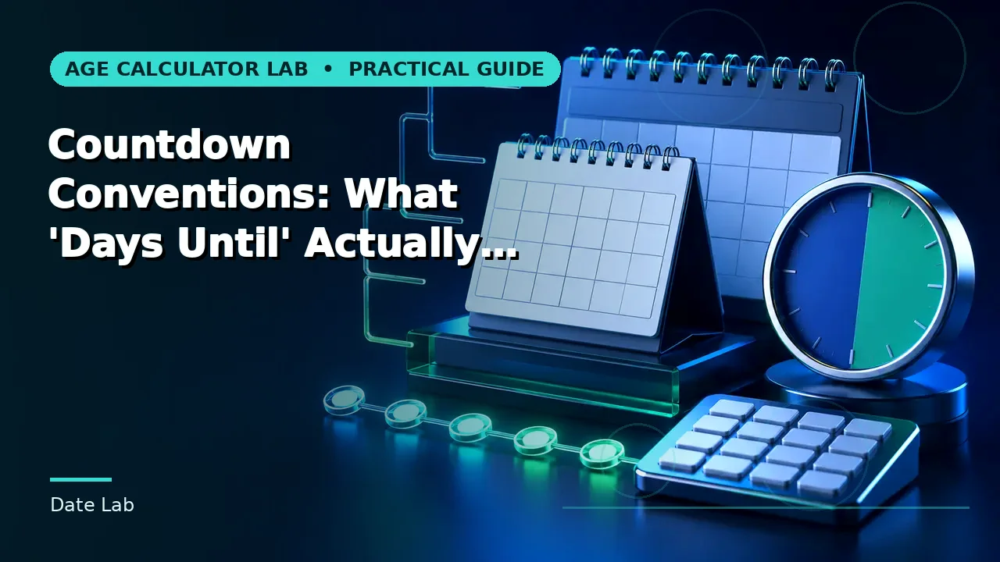

Prepping a BRIGANCE screening
needs chronological age in Y;M;D on the exact administration date, not the report-writing date.
Open BRIGANCE Age Calculator →Start with chronological age in years, months and days. Then reach for 160 more focused tools covering assessments, pregnancy timelines, employment milestones and calendar planning — each one showing the method behind the number.
Exact calendar age from a birth date to any reference date.
Enter a date of birth and select Calculate.
Each opens with the calculator, states its method, and links onward when the question turns out to be a different one.

Exact chronological age in completed years, calendar months and remaining days.
Chronological age on an assessment date.

Calendar difference in years months days and total days.

Chronological age adjusted for weeks of prematurity.

An estimated due date from the last menstrual period and cycle length.

Time remaining until the next birthday.
Filter by the job in front of you rather than by category name. 161 tools in total — these are the ones people reach for most.
Exact chronological age in completed years, calendar months and remaining days.
Chronological age on an assessment date.
Age on a specific testing or evaluation date.
Chronological age preparation for BRIGANCE assessment records.
Chronological age adjusted for weeks of prematurity.
Chronological and corrected age for prematurity-related planning.
A baby’s chronological age in completed weeks and days.
An estimated due date from the last menstrual period and cycle length.
The estimated due date and LMP implied by a current gestational week and day.
An estimated due date calculated from an embryo transfer date and embryo day.
Exact employment service duration between two dates.
The next employment anniversary and completed service years.
The end date of a notice period counted in working days.
The calendar end date of a probation period expressed in months.
A chosen retirement-age milestone date.
The number of weekdays in a selected calendar month.
Calendar difference in years months days and total days.
Weekdays between two dates with weekends excluded.
Days, weeks and weekdays remaining until any chosen target date.
The fiscal quarter, quarter start and quarter end for any date and fiscal-year start month.
The calendar dates covered by a given ISO-8601 week number and week-year.
The real elapsed interval between two local date-times in different UTC offsets.
Time remaining until the next birthday.
The calendar date on which 10,000 elapsed days are reached.
Korean age reckoning alongside international age for the same birth date.
The birthday when age matches the day number of birth.
Dog age expressed as an approximate human-age equivalent.
Western zodiac sign associated with a birth month and day.
These are the most-requested tools rather than the full set. Browse all 161 in the category directory, or start from a guide if you are not sure which calculation you need.
No duplicate all-tools wall. Jump straight to the category that matches your question.
The point is not just a number. It is a number you can reproduce, explain and defend if someone questions it.
Exact calendar age, a total in one unit, or an eligibility comparison are different questions with different tools.
Use the full date from the most reliable source, and set the reference date that actually controls the decision.
The main answer comes with supporting metrics, so a reversed or mistyped input is easier to spot.
Copy the result with its inputs, print it, or send a link that reopens the same calculation for someone else.
These are use cases, not customer quotes. When there are real reviews to publish, they will appear here with names attached.
needs chronological age in Y;M;D on the exact administration date, not the report-writing date.
Open BRIGANCE Age Calculator →wants chronological and corrected age side by side so milestone conversations make sense.
Open Corrected Age Calculator →has to know whether the contract counts working days or calendar days before confirming a leaving date.
Open Notice Period End Date Calculator →needs working days rather than calendar days in the final fortnight, where holidays do the damage.
Open Quarter End Date Calculator →is calculating age on the ceremony date and recording a birth-year range rather than inventing precision.
Open Age at Marriage Calculator →wants to see the stated method so they can tell which convention each tool used.
Open Date Difference Calculator →Original guides covering calendar rules, age formats, common mistakes and the conventions that make two calculators disagree.

Exact age is a calendar interval, not a decimal estimate. Learn how complete years, calendar months and remaining days fit together.
Read the guide →
Norm-referenced tests select an age band from the child's age on the test date, which makes the reference date as important as the arithmetic.
Read the guide →
Corrected age subtracts how early a baby arrived from their chronological age, so development is compared against the right timeline.
Read the guide →
ISO-8601 weeks always start on Monday and always contain a Thursday, which is why week 1 can begin in the previous December.
Read the guide →
Notice periods can be defined in working days, calendar days, weeks or months, and each definition produces a different end date from the same start.
Read the guide →
Two countdowns to the same date can differ by a day without either being wrong, because they disagree about whether today counts.
Read the guide →How the calculations work, what happens to your data, and what these results can and cannot be used for.
Yes. All 161 calculators and 100 guides are free to use, with no account and no sign-up. There is no paid tier.
No. The calculators run in JavaScript in your browser. The values you type are used to produce the result on the page and are not submitted to a server to be calculated.
Yes. When you calculate, your inputs are written into the page address. The Share button copies that link, and anyone who opens it sees the same inputs with the result recalculated in their own browser.
Almost always a convention difference rather than an error: whether endpoints are counted, how end-of-month dates are handled, how February 29 is treated, or whether a rounded or exact value is shown. Every tool here states its method so you can compare.
Treat it as supporting arithmetic. Clinical, legal, financial, school, employment and benefits decisions depend on rules set by the relevant manual, policy or authority, and those take precedence over any calculator.
No, and there are no invented ones either. Rather than fabricate testimonials, the site shows what can be verified: who wrote and reviewed the content, when it was last updated, and how each calculation works.
Navjeet Kamboj writes and reviews the guides. Each one names its author, carries a last-updated date and links to the methodology page describing how the calculations are documented.
Once a page has loaded, the calculation itself runs locally, so it will keep working if your connection drops. Navigating to a page you have not visited still needs a connection.
Fabricated reviews are against Google's spam policies and, in the US, illegal under the FTC's 2024 rule. So there are none here.
The author's name and credentials, the last-reviewed date on every page, the documented method behind each calculation, and the fact that nothing is sent to a server.
If a calculator got something wrong, or a guide helped, email the page URL and what you expected. Real feedback improves the pages; invented feedback would not.